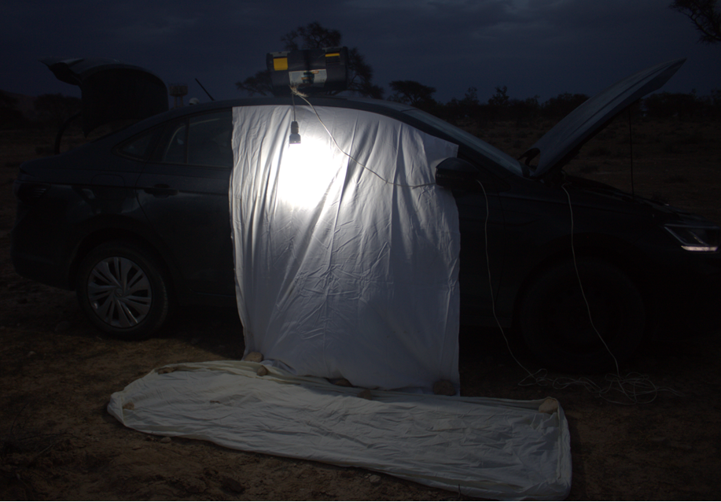
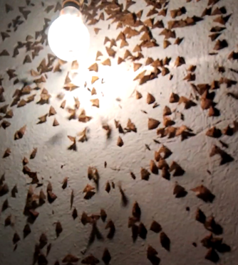
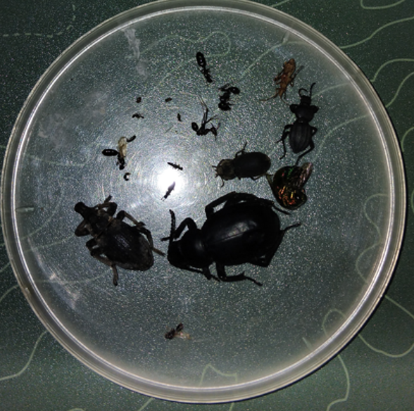

Insect Study & Field Sampling Protocol
Session Lead: Mr. Wael Ben Aba
Affiliation: WWF North Africa
Subject:.......................................
This field protocol provides standard guidelines for nighttime insect sampling, ethical field collection, specimen preservation, and laboratory examination under a stereomicroscope.
1. Nighttime Light Trap Setup & Collection
Setup & Equipment Configuration
The field sampling unit utilizes a white sheet suspended vertically along the side of a vehicle, complemented by a ground sheet to collect falling insects. The setup is powered directly by the vehicle battery or engine power source, illuminating a high-intensity bright white light bulb positioned directly in front of the vertical fabric background after sunset.

Biological Mechanism: Nocturnal Phototaxis & Transverse Orientation
Nocturnal insects rely on distant point sources of light (such as the moon or stars) for celestial navigation. They maintain a fixed angle relative to these distant rays to fly in a straight line (known as transverse orientation or dorsal light response).
When an artificial white light bulb is introduced nearby, the light rays diverge significantly. As the insect attempts to maintain its constant orientation angle relative to the diverging rays, its flight path curves inward, causing it to spiral toward the light source and land onto the illuminated white sheet.

Ethical Sampling Rule:
Collect a maximum of 5 specimens per species per sampling night. This strict quota avoids depleting local insect populations while providing sufficient sampling variation for taxonomic and morphological analysis.
2. Specimen Preservation Techniques
Proper preservation is essential to protect physical integrity and prevent fungal, enzymatic, or structural degradation. The choice of preservation method depends on the insect order and physical exoskeleton characteristics:
A. Liquid Preservation
Medium: 70% – 80% Ethanol solution
- Target Organisms: Soft-bodied insects (e.g., Diptera, aquatic nymphs, larval stages, spiders).
- Mechanism: Prevents tissue shrinkage, retains soft internal structures, and stops cellular decay.
- Container: Airtight, leak-proof glass or polyethylene vials.
B. Dry / Solid Preservation
Medium: Ethyl acetate killing jars & dry mounting/pinning
- Target Organisms: Hard-bodied insects with thick exoskeletons (e.g., Coleoptera beetles, adult Hemiptera).
- Mechanism: Preserves delicate surface setae, scale patterns, and outer chitin colors without distortion.
- Container: Dry specimen boxes or padded entomological kill jars.
3. Laboratory Inspection under Stereomicroscope
Once collected and preserved, specimens are brought to the laboratory for detailed identification under a stereomicroscope (typically operating at low-to-medium optical power such as 2x to 4x objective zoom).
Key Diagnostic Features to Examine:
- Antennae Morphology: Structure type (filiform, clavate, pectinate, or geniculate) and segment counts.
- Tarsal Formula & Legs: Arrangement of tarsal segments and claws, critical for family identification in Coleoptera.
- Wing Venation: Vein layout and closed cell geometry on forewings and hindwings (crucial for Diptera and Hymenoptera).
- Mouthparts: Mandible structure, maxillae, and labial palps revealing feeding adaptations.
